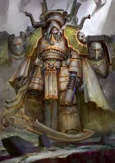

Mortarion
O Primarca da XIV Legião, os Death Guard, é o mestre da resiliência, das doenças e da guerra de atrito. Mortarion, o "Senhor da Morte", é uma figura sombria que passou de um libertador oprimido a um dos maiores tiranos da galáxia, ironicamente tornando-se aquilo que ele mais odiava.
Quem é Mortarion?
Mortarion caiu em Barbarus, um mundo tóxico onde uma névoa venenosa cobria as montanhas, habitadas por "Senhores Supremos" alienígenas e necromantes que escravizavam os humanos nos vales. Ele foi adotado pelo mais poderoso desses senhores, que o criou como um filho e o treinou para sobreviver em altitudes onde nenhum humano conseguiria respirar. Eventualmente, Mortarion se rebelou contra seu pai adotivo. Ele desceu aos vales, uniu os camponeses e criou um exército de "Death Guard" originais, usando armaduras rudimentares para resistir ao veneno. No entanto, sua maior mágoa ocorreu quando o Imperador chegou: para provar a fraqueza de Mortarion, o Imperador matou o último Senhor Supremo de Barbarus que Mortarion não conseguiu derrotar sozinho, ferindo permanentemente o orgulho do Primarca.
Características e Personalidade
Odeio ao Psíquico: Devido ao trauma com os feiticeiros de seu mundo natal, Mortarion nutria um ódio profundo por qualquer forma de magia ou poderes psíquicos (ironicamente, ele próprio era um poderoso psíquico latente).
Resiliência Absoluta: Ele acredita que o valor de um guerreiro é medido pelo quanto de dor ele pode suportar. Ele e sua legião treinavam em ambientes tóxicos e bebiam veneno como ritual de fraternidade.
Amargura: Odeia tirania, mas tornou-se parte dela.
Aparência de Ceifador: Ele é alto, magro e pálido, sempre empunhando sua imensa foice, Silence, e usando um respirador que exala gases tóxicos de Barbarus.
Amargura Silenciosa: Ele nunca perdoou o Imperador por "roubar" sua glória e sempre se sentiu um estranho entre seus irmãos mais brilhantes e nobres.
Grandes Feitos
A Libertação de Barbarus: Mortarion transformou camponeses aterrorizados em uma força militar capaz de enfrentar horrores necromânticos. Ele inventou táticas de guerra química e biológica que se tornariam a marca registrada de sua Legião.
A Queda no Caos: Durante a viagem para o Cerco de Terra, a frota da Death Guard ficou presa no Warp e foi infectada pela "Praga do Destruidor". Seus guerreiros, imortais mas em agonia constante, não conseguiam morrer. Para salvar seus filhos do sofrimento eterno, Mortarion se rendeu ao deus Nurgle. Ele trocou sua alma e a de sua legião pela sobrevivência, transformando-se no que ele mais temia: um mestre da feitiçaria e das doenças.
O Cerco de Terra: Mortarion foi um dos pilares da invasão de Horus. Sua legião era a infantaria imparável que avançava através de bombardeios que matariam qualquer outro ser. Ele transformou o palácio em um pântano de podridão antes de ser confrontado e banido pelo seu irmão Jaghatai Khan em um duelo épico.
A Guerra da Praga: No 42º milênio, Mortarion invadiu os mundos de Ultramar, desafiando Roboute Guilliman. O conflito foi uma das maiores demonstrações do poder de Nurgle, culminando em um confronto direto onde Mortarion quase derrotou Guilliman, antes da intervenção divina do Imperador através do corpo do próprio filho.
Atualmente: Mortarion governa o Mundo da Praga dentro do Olho do Terror. Apesar disso vive em uma relação de amor e ódio com Nurgle. Ele ainda se vê como um libertador, embora agora espalhe a "liberdade" da morte e do apodrecimento por onde passa.
Estilo de Combate
- Guerra de desgaste lento
- Foice massiva e resistência absurda